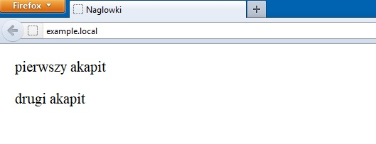

Akapity HTML
Akapit jest to część tekstu objęta znacznikami: <p>...</p>. Znacznik <p> jest blokowy element, zawsze zaczyna się od nowego wiersza.
<p>pierwszy akapit</p>
<p>drugi akapit</p>
<p>drugi akapit</p>
Dane wyjściowe
rysunek 2. Akapity HTML
W sytuacji, gdy chcesz otrzymać więcij lub mniej miejsca między akapitami niż ilość domyślnie definiowana przez przegłądarkę WWW. Potrzebno użyć arkuszy styłów CSS. Jak możesz zobaczyć, przerwa znajduje się między znacznikiem zamykającym akapit (</p>) i otwierającym (<p>).